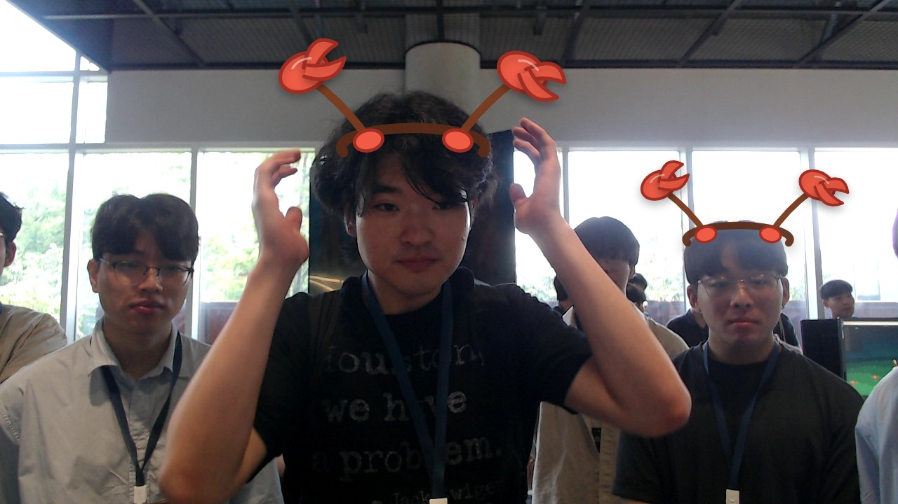

JEYUN KANG
NVIDIA CEO
MOTTOMAKE WORLD FASTER WITH GPUS
JEYUN KANG — NVIDIA CEO, GPU로 더 빠른 세상을 만드는 리더
About me
I lead NVIDIA as CEO, building accelerated computing platforms that help developers, researchers, and companies make the world faster with GPUs.
What I do
AI-written bio
JEYUN KANG은 제공된 프로필에 따르면 NVIDIA를 이끄는 CEO로, 개발자·연구자·기업이 GPU 기반 가속 컴퓨팅 플랫폼을 활용해 더 빠르게 혁신하도록 돕습니다. 사진에서는 편안한 실내 환경과 장난스러운 시각 효과가 더해져 친근한 개인 블로그 인상을 줍니다.
AI first impression
차분하면서도 유쾌한 분위기의 기술 리더 프로필 사진입니다.